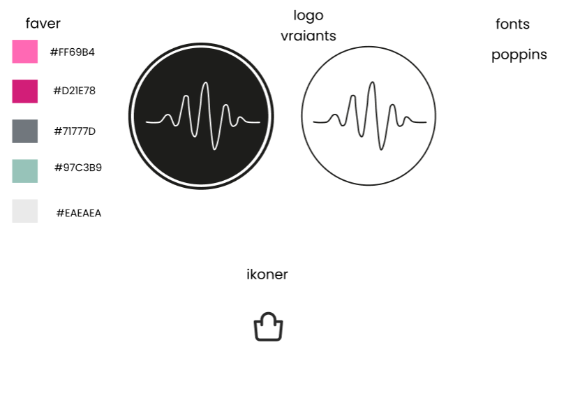

EKSAMENSPROJEKT · 1. SEMESTER
Lumina One - Landing Page
Lumina One var en af de første større cases på 1. semester. Opgaven var at udvikle en landing page for den fiktive højttaler Lumina One med unge studerende som målgruppe. Produktnavnet og en række grundlæggende specifikationer var givet på forhånd, mens vi selv skulle udvikle den visuelle identitet og præsentationen af produktet.
Til eksamen kunne vi vælge mellem tre tidligere projekter og videreudvikle ét af dem. Jeg valgte Lumina One, fordi det var et tidligt projekt, og derfor gav det mig mulighed for at arbejde løsningen igennem igen med de kompetencer, jeg havde fået gennem semesteret. Jeg endte derfor med at redesigne og videreudvikle stort set hele løsningen.
Min rolle: Jeg arbejdede med UX/UI, visuel identitet, Figma, udvikling af landingpagen og implementering i HTML, CSS og JavaScript.

PROCESSEN
Fra idé til færdig løsning
Processen startede med research og idéudvikling, hvor jeg blandt andet arbejdede med moodboard, persona, skitser og style tile. Det hjalp mig med at definere målgruppen og skabe en samlet visuel retning for Lumina One.
I Figma arbejdede jeg videre med layout, produktbilleder og components, så elementer kunne genbruges og designet holdes konsistent på tværs af løsningen.
I eksamensversionen begyndte jeg også at bruge Illustrator mere aktivt. Grafiske elementer og logoer, der ikke havde den ønskede kvalitet, kunne jeg bearbejde og konvertere til vektorgrafik. Det gav mig skarpere grafiske elementer og en mere ensartet visuel kvalitet i det færdige design.

Visuel retning med farver, typografi, logo og grafiske elementer.
Bruges til at forstå målgruppen, deres behov, adfærd og forventninger til produktet.
UDVIKLING
Interaktivt farvevalg
En af de dele, jeg selv er mest tilfreds med, er købssiden. Her arbejdede jeg med JavaScript for at gøre produktvalget mere interaktivt.
Lumina One findes i flere farver, og brugeren kan vælge en bestemt farve direkte fra landingpagen eller skifte mellem varianterne på købssiden. Når en ny farve vælges, opdateres blandt andet produktbilledet og produktnavnet, så den valgte variant vises korrekt.
JavaScript var samtidig en af de største udfordringer i projektet, fordi vi på det tidspunkt kun havde arbejdet begrænset med det. Funktionen blev derfor en god mulighed for at afprøve JavaScript på en konkret funktion i løsningen.
colorButtons.forEach(button => {
button.addEventListener("click", () => {
colorButtons.forEach(btn =>
btn.classList.remove("active")
);
button.classList.add("active");
const newImage = button.dataset.img;
if (newImage) {
mainImage.src = newImage;
}
});
});REFLEKSION
Hvad lærte jeg?
Lumina One gjorde min udvikling gennem 1. semester meget tydelig. Den oprindelige version var en af mine første større cases, og da jeg vendte tilbage til projektet til eksamen, havde jeg fået mere erfaring med både UX/UI, Figma, Illustrator og webudvikling.
Derfor valgte jeg ikke kun at rette enkelte dele, men at videreudvikle stort set hele løsningen. Jeg arbejdede blandt andet videre med den visuelle identitet, kvaliteten af de grafiske elementer, strukturen på siden og interaktiviteten på købssiden.
Projektet lærte mig især, hvor stor forskel en tydelig designproces og løbende iteration kan gøre. Samtidig blev jeg udfordret på JavaScript, som var et forholdsvis nyt område for mig på det tidspunkt.